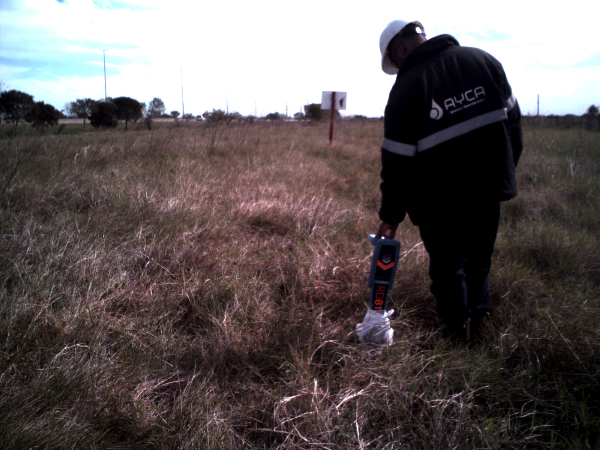

Patrullaje terrestre de ductos
El servicio incluye abarcar tareas de monitoreo terrestre de las instalaciones, con el fin de
evitar y prevenir
eventos que pudieran alterar la integridad de los ductos, generando derrames o fugas del
producto
transportado y que afectaran al medio ambiente y/o a las personas.
Planificacion
Coordinar con el cliente servicios complementarios al servicio de patrullaje, acordando con él,
productos, procesos y metodologías.
Para una correcta planificación y desarrollo del servicio es indispensable que AYCA disponga de
información asociada al ducto involucrado en el Servicio de Patrullaje.
Se coordinan reuniones previas con el cliente donde se le requieren datos de los ductos
involucrados a monitorear.
El personal de planificacion, analiza con cartografía digital los puntos sensibles por los que
atraviesa el ducto con el fin de hacer hincapié durante el patrullaje en aquellos lugares que se
encuentran en situación de mayor vulnerabilidad.
Para lugares de dificil acceso, el personal de patrullaje planifica los "Planes de Vuelo" a
realizar mediante un Vehículo Aéreo No Tripulado (VANT). Establece puntos de despegue y
aterrizaje en función de recorridos, autonomía de vuelo, complejidad del recorrido, etc. Además,
se detallan los elementos a verificar (caminos, canales de desagües, MKM, MAE, Válvulas de
Bloqueo, Rectificadoras, actividad cercana a la franja de seguridad, etc.)..
Recursos humanos y mobilidad
Para llevar a cabo las tareas de patrullaje, se dipone de los siguientes recursos:
- Vehículo 4 x 4 con sistema de seguimiento satelital.
- Personal con experiencia.
- Sistema de posicionamiento Global y camaras con GPS
- VANT (Vehículo Aéreo No Tripulado).
- Detector de cañerías con calibración certificada
Gestion de documentos
Brindamos un servicio dedicado a la gestion de documentos para el ingreso y actualizada durante
el plazo determinado de las tareas en el lugar de la Obra. La empresa cuenta con un departamento
especializado en generar y mantener actualizada la documentacion de todo el personal y la
flota, permitiendo de esta forma el desarrollo de las actividades sin interrupciones por
vencimientos de polizas, examenes, cursos o cuaquier otra documentacion que el cliente final
solicite necesaria para el desarrollo de las actividades.
Ejecucion del servicio
El personal de AYCA recorre la traza por donde pasa el ducto y visualiza y registra todas las
interferencias que observan durante el recorrido, entendiéndose por interferencia aquello que
pueda poner en riesgo tanto la
integridad del ducto como la del medio ambiente.
Informes
Al finalizar el recorrido, se entregan informes a pedido del cliente con detalle de puntos
sensibles,
interferencias encontradas y actualizaciones del estado de la mismas en proxmo
recorridos.
Informe Ilustrativo: sumado a los informes anteriores, se entrega al cliente un archivo KMZ
con información tanto ilustrativa como descriptiva de las observaciones más importantes del
patrullaje realizado.
Informes Periódicos: estos informes se realizan con el fin de generar un balance general del
servicio y aplicar medidas correctivas, logrando mejoras continuas en la metodología.
Relevamientos y reparacion de carteleria
Adicional al patrullaje, se lleva a cabo el servicio de
relevar en forma cuantitativa y cualitativa la cartelería
correspondiente a cada una de las trazas, como así también la ausencia de carteles en cruces
especiales y informado de esta forma el riesgo a que está sometido el ducto ante la ausencia de una
correcta señalización.
Se realiza ademas, un relevamiento fotográfico de todos los carteles presentes en el recorrido
de la
traza y los lugares que son considerados cruces especiales y no poseen. De esta manera se le
otorga
al cliente informes con el estado general y específico de los carteles.
Restauración de Carteles
Dependiendo de los requerimientos del cliente, se adiciona al servicio la tarea de restaurar
carteles en mal estado
o en aquellos casos donde no existiera cartelería,
colocarla.
